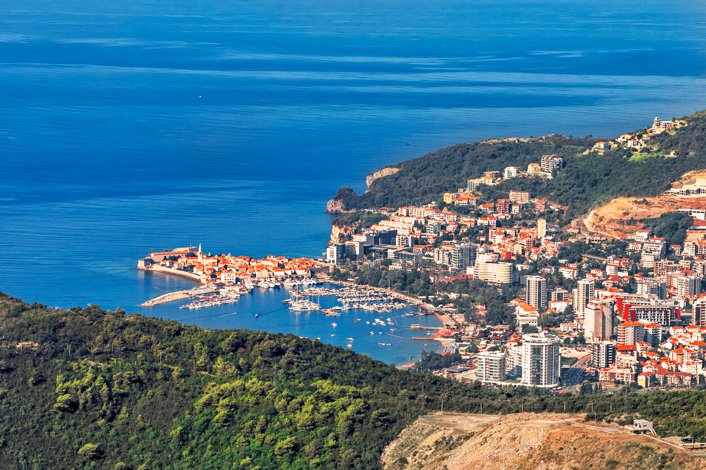
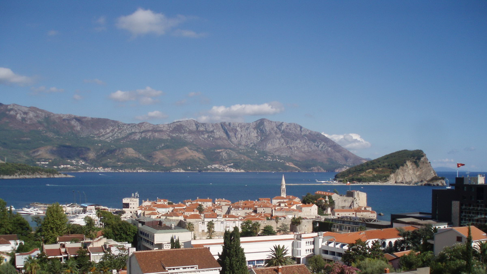
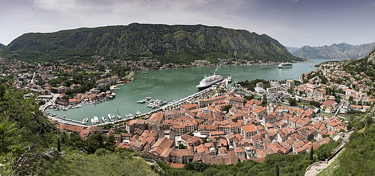
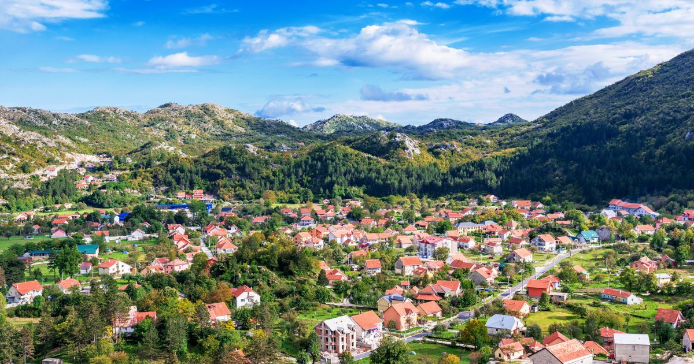
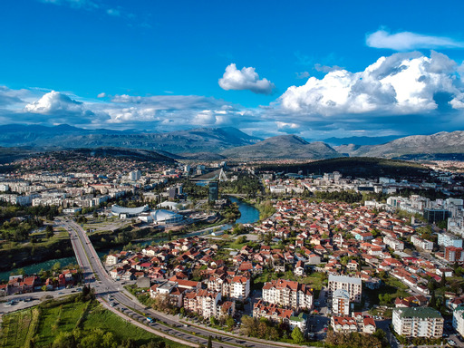
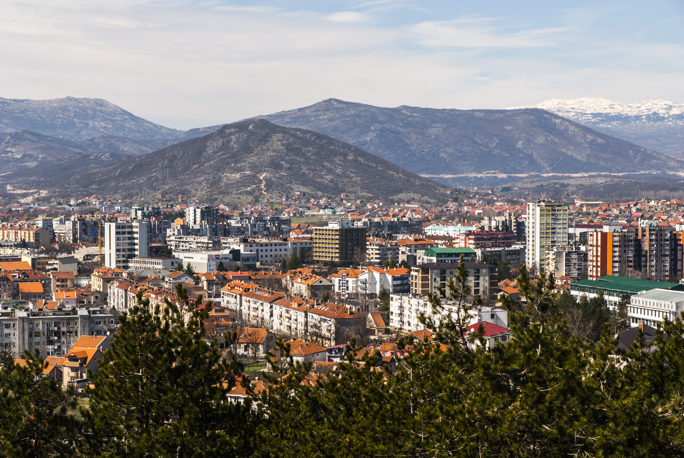
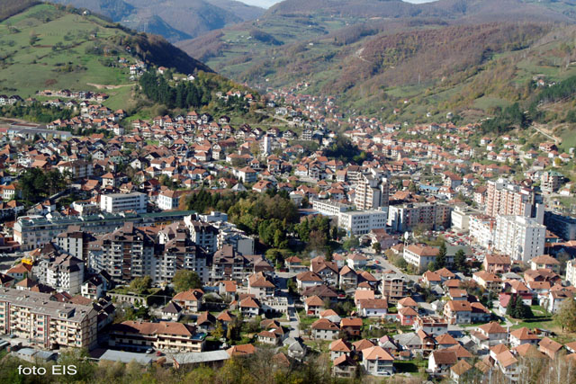
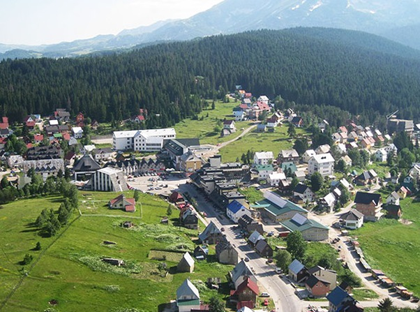

| 1. |
Bar
|
Juzna |
42 048 |
-
Bar je poznat po multietničnosti.Njegovo bogatstvo čini 25
nacionalnosti koje naseljavaju ovaj prostor.
-
Luka Bar je najveća crnogorska luka. Bar je veza Crne Gore sa
svijetom, jer je granična opština, koja je Jadranskim morem
vezana sa Italijom.
-
Tvrđava Stari Bar je najveće utvrđenje u Crnoj Gori. Nalazi se u
podnožju planine Rumije, na strmoj litici.
|

|
| 2. |
Budva
|
Juzna |
19 218 |
-
Budva je stara oko 3.450 godina i jedan je od najstarijih
gradova na Jadranskom moru
-
Budva je promenila mnoge osvajače, a najduže su se na području
grada zadržali Mlečani i Austrijanci, koji su napustili grad
1918. godine.
-
Područje oko grada, duž obale, poznato je i kao Budvanska
rivijera. Rivijera je centar crnogorskog turizma, i poznata po
peščanim plažama, noćnom životu.
|

|
| 3. |
Kotor
|
Juzna |
22 601 |
-
Stara mediteranska kotorska luka, okružena impresivnim gradskim
zidinama, je vrlo dobro sačuvana i pod zaštitom je UNESKO-a, kao
svetska kulturna baština.
-
Kotorski zaliv (Boka Kotorska) jedan je od najdubljih i najdužih
zaliva na Jadranskom moru pa se često naziva najjužnijim fjordom
Evrope.
-
U Kotoru se nalazi Institut za biologiju mora Univerziteta Crne
Gore. Takođe u Kotoru postoje Pomorski fakultet kao i Fakultet
za turizam i hotelijerstvo Univerziteta Crne Gore.
|

|
| 4. |
Cetinje
|
Centralna |
16 657 |
- Cetinje je istorijska i sadašnja prestonica Crne Gore.
-
Zbog svoje autentične arhitekture i velikog broja istorijskih
građevina, relikvija, manastira, crkvi i muzeja, ovaj grad je
dobio naziv „grad-muzej“.
-
Ravnica u kojoj se nalazilo manje naselje (selo) Cetinje, zvala
se krajem XIV vijeka Cetinjsko polje: po rijeci Cetini, koja je
tekla poljem do kraja XVII vijeka.
|

|
| 5. |
Podgorica
|
Centralna |
185 937 |
- Podgorica je glavni i najveci grad Crne Gore.
-
Nalazi se blizu ostataka rimskog grada Dokleje. U srednjem
vijeku ovde je postojalo naselje koje se zvalo Ribnica, a pod
ovim imenom grad se prvi put spominje 1326.
-
Podgorica je od 1878. ušla u sastav Kneževine Crne Gore. Od
1946. je administrativno sjedište Crne Gore, a za vrijeme SFRJ
Podgorica se zvala Titograd.
|

|
| 6. |
Niksic
|
Sjeverna |
72 443 |
-
Nikšić je najviša opština u Crnoj Gori, a drugi grad po broju
stanovnika, poslije Podgorice.
- Nikšić je privredni i industrijski centar Crne Gore.
-
Crvena stijena - najznačajniji praistorijski lokalitet u Crnoj
Gori. Potencijalno jedan od najvažnijih arheoloških nalazišta
Evrope.
|

|
| 7. |
Bijelo Polje
|
Sjeverna |
46 051 |
-
Bijelo Polje se nalazi u dolini koju preseca planinska reka Lim.
Nekada je to zaista bilo polje, s proleća prekriveno cvetovima
bele rade, cveta koji je i polju i tamošnjem naselju odredio ime
- Bijelo Polje.
-
Od svih gradova na severu Crne Gore, Bijelo Polje ima
najpovoljniji geografski položaj. Nalazi se na raskrsnici važnih
puteva: na pruzi Beograd-Bar, na magistrali koja od Beograda
vodi prema moru.
-
Arheološka istraživanja ubedljivo govore o postojanju naselja u
ovom kraju još u dalekoj prošlosti. Bjelopoljski kraj bio je
naseljen još u neolitu (5.000 do 3.000 godina prije n. e.).
|

|
| 8. |
Zabljak
|
Sjeverna |
3 569 |
-
Prvi slovenski naziv ovog mjesta bio je Varezina voda. To je
zbog izvora pitke vode oko kojeg se naselje i formiralo. Kasnije
je dobio novi naziv Hanovi i u njemu su se odmarali trgovački
karavani. Ime Žabljak potiče potiče od žaba koje žive na
lokalitetu Otoke i najavljuju proljeće svake godine.
-
Žabljak je naselje koje se nalazi u podnožju planine Durmitor,
sa najvišom nadmorskom visinom na Balkanu, na oko 1.450 metara u
samom centru grada. Okružuju ga 23 planinska vrha visine od
preko 2.300 metara nadmorske visine.
-
Žabljak je prepoznatljiv po Crnom jezeru. Crno jezero je
najpoznatije, a u isto vrijeme najveće od 18 ledenih jezera u
Nacionalnom parku Durmitor. Vise od 3 km staze oko jezera, je
najpopularnije mjesto za predivnu jedistvenu šetnju, uzivanje i
rekreaciju.
|

|